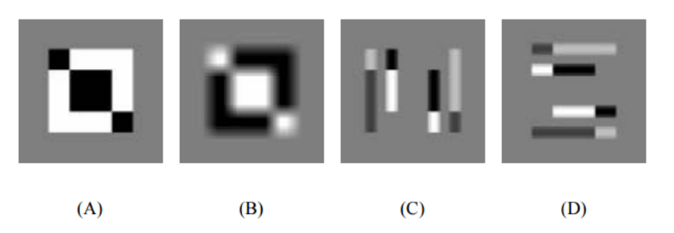

Assignment 2
Objectives
- 2D Convolution.
- Image Histograms.
- Histogram Equalization.
- 2D Fourier Transform.
- Image Gradients.
Prerequisites (Before you start)
- Read Section 3 Notes.
- Read Section 4 Notes.
Deadline
Tuesday 13/3/2018 12:00 PM.
Required
Each individual student is required to submit the solution of assignment problems. You can submit it as a hard-copy or scan it and send by mail providing this title (CV2018-Assignment2-[YOUR_NAME])
Problem 1
Consider the following small image:
a) Calculate the image that results from convolution with the following kernel:
Just provide the result for the central 5 by 5 part of the image.
b) Calculate the image that results from applying a 3 × 3 median filter
Just provide the result for the central 5 by 5 part of the image.
Problem 2

Calculate the following
a) The output of 3x3 mean filter
b) The output of 3x3 laplacian filter
c) The Histogram of the image
d) The output of histogram equalization. Show cumulative curve
Problem 3
Let is the 2D DFT of the image

Calculate :
a)
b)
c)
Problem 4
The gradient of a two-dimensional function is a vector-valued derivative. The x component of the gradient is defined by
Consider the following three discrete approximations to the x component of the gradient of an image f. For each case, determine a convolution kernel that produces an image containing the given approximation of the x component of the gradient.
a)
b)
c)
Problem 5
Consider the 48×48 input image in shown figure.
Identify which of the output images in result from applying and to the original input image, where:
and
